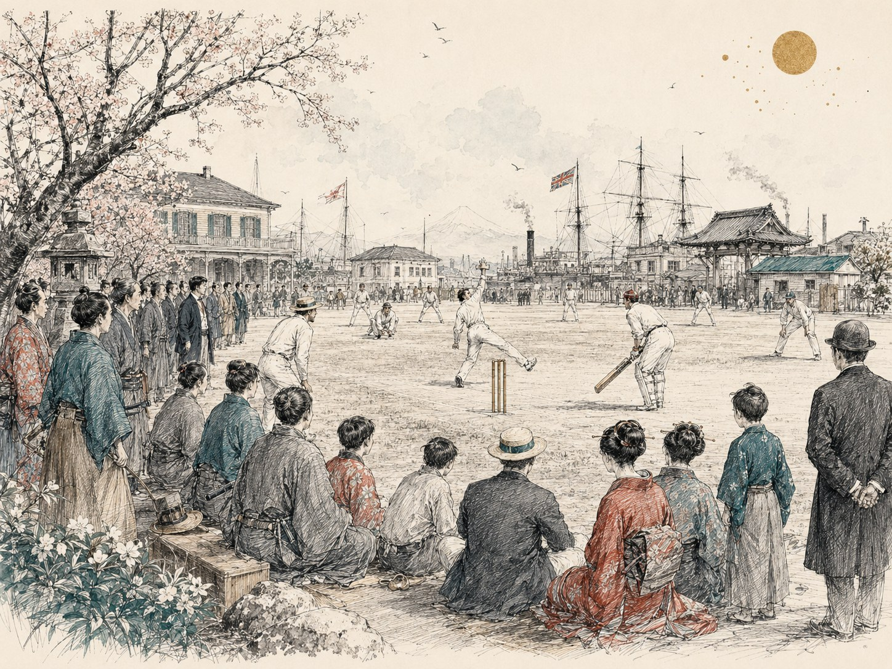

13C
鎌倉時代
WORLD
クリケットの起源には諸説
中世のイングランドで子供の遊びとして成立したと考えられ、「羊飼いの遊びから発展した」という説も紹介されている。
JAPAN—
幕末の横浜にやってきたクリケットは、長い空白を経て大学スポーツとして再び根を張り、佐野を拠点に世界へ向かい始めた。世界のクリケット史と並べながら、日本の160年余りをたどる。

左側に世界のクリケット史、右側に日本での出来事を配置しています。日本の大きな転換点は枠付きで強調しました。
中世のイングランドで子供の遊びとして成立したと考えられ、「羊飼いの遊びから発展した」という説も紹介されている。
現在のクリケットにつながる競技が、イングランド南東部で行われるようになる。
成人がクリケットを行った記録が残る。17世紀半ばには村落クリケットが発達する。
クリケットの競技規則が文章として体系化される。
両校が初対戦。のちに世界で最も長く続く定期スポーツ対戦の一つとなる。
米国対カナダ戦がニューヨークで開催され、最初の国際クリケット試合とされる。
横浜商人と英国海軍による「横浜 vs 英国海軍」が行われる。記録に残る日本最初のクリケット試合。
J.P.モリソンらがYokohama Cricket Clubを設立。日本初のクリケットクラブとされる。
オーストラリア対イングランドがメルボルンで開催。
横浜クリケットクラブなど4団体が統合し、Yokohama Cricket & Athletic Clubとなる。
オリンピックでクリケットを実施。その後、長く五輪競技から外れる。
イングランド、オーストラリア、南アフリカによりImperial Cricket Conferenceが設立。
現在の名称に改称し、横浜公園から山手へ移転。
雨で中止となったTest Matchの代替として、メルボルンで最初のOne Day Internationalが行われる。
イングランドで開催。男子より2年早い、クリケット史上初のワールドカップ。
イングランドで開催。西インド諸島が初代王者となる。
神戸市外国語大学の山田誠教授がクリケットを紹介し、神戸在住の有志による活動が始まる。
神戸市外国語大学に、日本人メンバーを中心とする初期のクリケットクラブが誕生。
在日外国人を中心とするクラブとして活動を開始。
現在の日本クリケットを支える全国組織が誕生する。
現在につながる大学クリケット拡大の契機となる。
中央大学・専修大学にクラブが誕生。ICC資料では日本がAffiliate Memberとなった年とされる。
関東の大学クラブによる男子選手権が始まる。
関東の大学クラブによる女子選手権が始まる。
日本がInternational Women's Cricket Council（IWCC）に加盟。
ACC Trophyに出場。男子代表として初めて国際的に認められた大会に出場。
岐阜県各務原市の小学校にクリケットクラブが誕生。
日本クリケット協会がNPO法人として組織基盤を整える。
イングランドのカウンティ・クリケットで新しい短時間形式がスタート。
IWCC Trophyに出場。
T20が国際クリケットの第3の主要形式へ発展していく。
日本がAssociate Memberへ昇格。ICC EAP Cricket Cupでも優勝。
インドが初代王者となる。
再び優勝し、World Cricket Leagueへの出場権を獲得。
T20のフランチャイズリーグが世界的な成長を加速させる。
広州アジア競技大会で正式なメダル競技となる。
JCA本部事務局が栃木県佐野市へ移転。「クリケットのまち佐野」へつながる。女子日本代表は広州アジア大会で銅メダル。
ICC Women's World Cup QualifierでFull Memberのジンバブエを破る。
大規模改修により日本の主要な国際規格クリケット拠点へ。JCAは一般社団法人格を取得。
佐野で開催されたICC U19 World Cup EAP予選を制し、初めてクリケット・ワールドカップ本大会への出場権を獲得。
男子U19日本代表が南アフリカのICC U19 Cricket World Cupに出場。日本代表として史上初のクリケットW杯本大会出場。
米国でMajor League Cricketが開幕。IOC総会では2028年ロサンゼルス五輪へのクリケット（T20）採用が正式承認される。
日本でクリケット競技を実施予定。
男子U19日本代表がタンザニアを破り、日本クリケット史上初のワールドカップ勝利。愛知・名古屋アジア競技大会には男女日本代表が開催国として出場予定。
ロサンゼルス五輪で1900年パリ大会以来のクリケット復帰。T20形式で男女各6チームが参加予定。
幕末に伝来した競技が、そのまま一直線に普及したわけではない。「伝来」「日本人による再出発」「組織化」「地域拠点」「世界大会」という段階を経て、現在につながっている。
幕末の国際港から、日本のクリケット史が始まる。
長い空白ののち、大学を中心に競技人口が広がる。
全国組織が生まれ、国際競技への道が整い始める。
地域拠点づくりと代表競技の成果が同時に進む。
2019年の予選突破を経て、日本代表が世界大会へ。
起源、初期のクリケット史。
日本の加盟状況、代表・国内クリケット史。
協会設立、法人化など。
佐野市と日本クリケットの発展。
1970年代以降の国内クラブ史を補助的に参照。
2019年の日本初W杯出場権獲得。
2026年のタンザニア戦。
2026年アジア競技大会。
2028年ロサンゼルス五輪のクリケット競技。